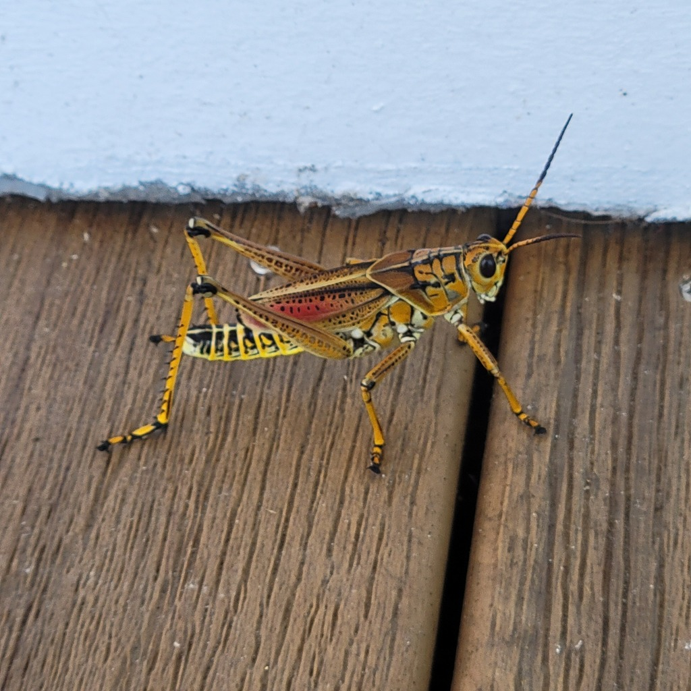

- The enormous, brightly colored grasshopper lumbering across the path — too big and too slow to be any other species — is an eastern lubber.
- It can barely fly. Those tiny wings are essentially useless for flight, so it walks, climbs, and hops instead. The name 'lubber' comes from an old word meaning clumsy or slow — fitting for an insect that has traded speed for attitude.
- The bold yellow, orange, and black adult pattern and the jet-black nymphal stripe are aposematic warning coloration, an honest advertisement to birds and reptiles that this insect is toxic and tastes terrible.
- Most predators learn quickly to leave it alone. The loggerhead shrike, however, skewers the grasshopper on a thorn or barbed wire and waits up to several days for the toxins to break down before eating it.
Up to 3 inches — by far the largest grasshopper you will see.
Adults are yellow to orange with bold black markings. Juveniles are strikingly different: glossy jet-black with a vivid yellow, orange, or red stripe running the length of the body and red-tinged legs. They look so unlike the adults that visitors routinely mistake them for a different species — they are not.
Tiny, vestigial — cannot support flight.
Slow, deliberate walker. Does not jump far or fly.
A hissing sound when threatened.
In spring, watch for small glossy black nymphs with a bright red, orange, or yellow stripe — unmistakably lubbers in their juvenile form. By summer, those same insects grow into large, boldly patterned yellow-and-black adults lumbering slowly along paths or through garden beds. Both stages are big, bold, and easy to spot.
Broadly polyphagous — recorded feeding on plants from more than 38 families. In Florida gardens, plants in the family Amaryllidaceae (especially Amaryllis and Crinum lilies) are particularly favored, along with Agapanthus, Narcissus, oleander, and citrus. Can cause significant defoliation of ornamental beds.
Paths, garden beds, and low vegetation. Hard to miss when present.
Most visible spring through fall; juveniles emerge in spring.
Observe and enjoy.

- © Jenny Gunter (CC-BY-NC), via iNaturalist
- © Maria Escobar (CC-BY-NC), via iNaturalist